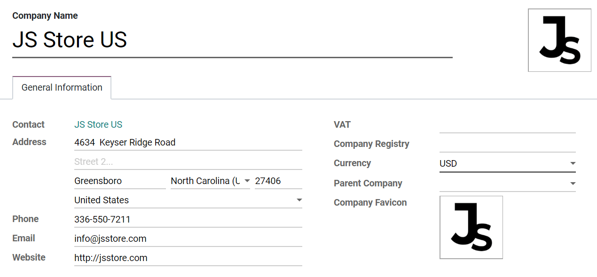

Empresas¶
Un entorno de gestión centralizada le permite seleccionar varias empresas de manera simultanea y configurar sus almacenes, clientes, equipos y contactos específicos. Le brinda la capacidad de generar reportes de cifras agregadas sin cambiar de interfaz, lo que facilita las tareas diarias y el proceso de gestión general.
Gestionar empresas y registros¶
Vaya a y complete el formulario con la información de su empresa. Si selecciona una Empresa matriz, los registros se compartirán entre las dos empresas (siempre que ambos entornos estén activos).
Truco
Active el modo de desarrollador para elegir un favicon para cada una de sus empresas y así poder diferenciarlas con facilidad desde las pestañas de su navegador. Establezca el tamaño de los archivos de sus favicon en 16x16 o 32x32 pixeles. Se aceptan las extensiones JPG, PNG, GIF e ICO.
Cambie o seleccione varias empresas habilitando sus casillas de selección para activarlas. La empresa en gris es la que está en uso. Para cambiar de empresa, haga clic en su nombre. En el siguiente ejemplo, el usuario tiene acceso a tres empresas, dos están activadas y la que se está usando es JS Store US.
Los datos como productos, contactos y equipos se pueden compartir o configurar para que se muestren solo para una empresa específica. Para ello, en sus formularios, elija entre:
Un campo en blanco: el registro se comparte con todas las empresas.
Agregar una empresa: el registro es visible para los usuarios conectados a esa empresa específica.
Acceso de empleados¶
Una vez que haya creado las empresas puede gestionar los permisos de acceso de sus empleados para Multiempresas.

La empresa actual (la que se encuentra activa) o,
No se establece ninguna empresa (en formularios de productos y contactos, por ejemplo) o,
La empresa establecida es la que está vinculada al documento (lo mismo que si se está editando un registro).
Formato de los documentos¶
Para configurar los formatos de los documentos según la empresa, active y seleccione el correspondiente y en Ajustes, haga clic en Configurar diseño de documento.

Transacciones dentro de la empresa¶
Primero, asegúrese de que cada una de sus empresas esté configurada correctamente en lo referente a:
Active la opción Transacciones entre empresas en Ajustes. Con la empresa correspondiente activada y seleccionada, elija si desea que las operaciones entre las empresas se sincronicen a nivel de facturas o a nivel de órdenes.

Sincronizar facturas: genera una factura cuando una empresa confirma una factura para la empresa seleccionada.
Ejemplo: una factura registrada en JS Store Belgium, para JS Store US, crea una factura de proveedor en JS Store US de forma automática desde JS Store Belgium.

Sincronizar orden de compra o venta: genera un borrador de orden de compra o venta utilizando el almacén de la empresa seleccionada cuando se confirma una orden de compra o venta para la empresa seleccionada. Si en lugar de un borrador de orden de compra o venta prefiere que se valide, active Validación automática.
Ejemplo: cuando se confirma una orden de venta para JS Store US en JS Store Belgium, se crea una orden de compra de forma automática en JS Store Belgium (también se confirma si la función Validación automática está activa).
Nota
Los productos se tienen que configurar como Se puede vender y se deben compartir entre las empresas.
Truco
Recuerde probar todos los flujos de trabajo como un usuario que no sea administrador.
Ver también
Lineamientos multiempresa